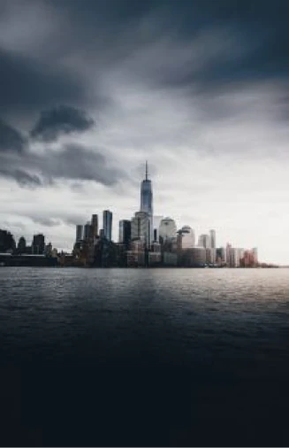
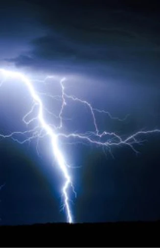
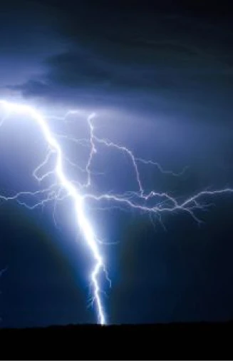

Autre-monde,
la vengeance de la Terre
Les vies de Matt et Tobias basculent le soir de la Grande Tempête. Des étranges éclairs bleus rampent comme s’ils cherchaient leurs proies… Au réveil de cette tempête le monde n’est plus le
La nature reprend le pas sur les déserts de béton. Les adultes se transforment pour certains en étranges créatures. D’autres se volatilisent, foudroyé par ces éclairs. Les derniers souffrent d’amnésie les conduisant à une haine de leurs progénitures.
 

Les enfants du monde entier sont les seuls rescapés de cette tempête. Ils tentent alors de découvrir ce qui se passe. Et essayent de survivre à cette nature inhospitalière peuplé d’étranges animaux. Les voitures et les armes à feu ont totalement fondues.
Les enfants font un bond arrière dans le temps, ils découvrent la vie à l’état brute. Ils apprennent à utiliser les matières premières. Ils n’ont plus d’électricités, plus d’internet, ils doivent se débrouiller par eux-mêmes.
Une épopée ancestrale :
Un autre danger guette Matt, une mystérieuse créature vêtue de noir lui apparait en rêve. Ildécouvre aussi que d’autres créatures effrayantes sont à sa recherche. Cependant pour se défendre, les enfants développent des altérations. Ces altérations sont différentes capacités qui se déclenche par rapport au vécut de chacun.
C’est la terre qui se rebelle contre l’homme, sa pollution et ses guerres.
Des milliers de fans :
Paru en 2008, L’alliance des trois est le premier de sept tomes. L’auteur, Maxime Chattam, très reconnu pour ses thrillers se lance dans le fantastique. Les éditions Albin Michel permettent à l’auteur de développer tout un univers. Il passionne les fans qui décident de créer une encyclopédie à son sujet. La « pancyclopédie » permet de regrouper un bestiaire et les personnages du livre.
L’auteur aborde des sujets très vastes comme l’amitié ou la survie. Il s’engage auprès de l’écologie en dépeignant un monde végétal Les enfants doivent trouver le courage de grandir sans répéter les erreurs passées.
Autre-Monde vous emmène à travers une épopée aux multiples paysages. Entre l’iles Carmichael, la forêt Aveugle, le livre fait voyager le lecteur par son imagination.
Le seul moyen de survivre est de s’organiser. L’alliance est la force. Matt, Tobias et Ambre décide alors de former L’alliance des Trois.
Vous avez aimé Autre-Monde : L’alliance des Trois ? Voici d’autres livres du même auteur:

Autre monde : Malronce

Autre monde : Le coeur de la Terre

Autre monde : Entropia

Autre monde : Oz

Autre monde : Neverland